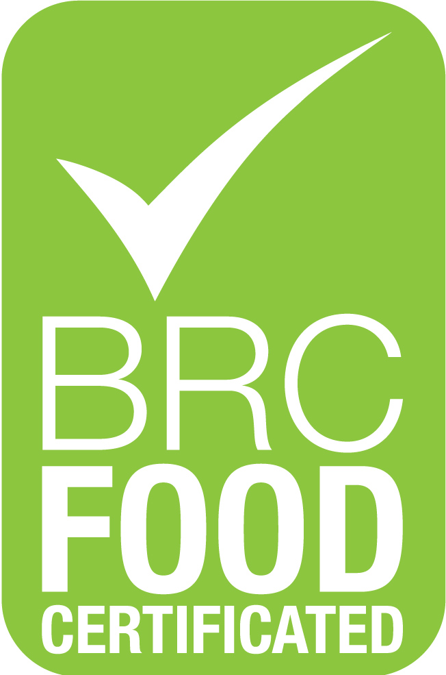
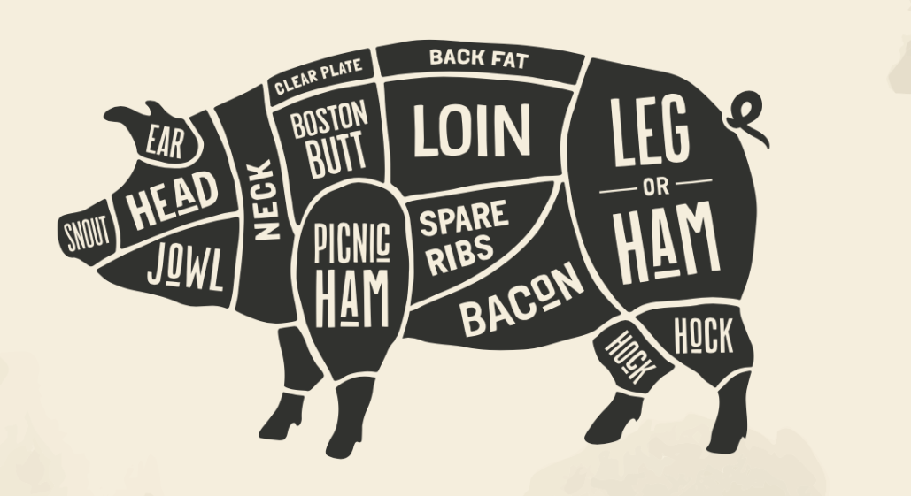

<section class="section section-sm bg-default">
    <div class="container">
        <div class="row row-50 justify-content-md-center justify-content-lg-start justify-content-xl-between">
            <div class="col-md-10 col-lg-6">
                <h4>Food Safety</h4>
                <p style="text-align: justify; text-justify: inter-word;">Ireland Natural Food Company ensures that all its pork products meet all national and international food safety standards. All the pigs are raised by Natural non GM crops, no added hormones, no added growth promoters, no added antibiotic, no preservatives added and are slaughtered, processed and packed in line with all relevant EU Legislation in regards to Animal Welfare, Food Hygiene, Food Safety, Quality and Legality.  The pork is examined and passed the BRC Global Standard for food safety and stamped with the Irish Official Veterinary Seal of Approval which is supported by the Traceability and Quality Management System.</p>
                <div class="group-3-columns" data-lightgallery="group">
                    <div class="column-item"><a href="https://www.brcgs.com">
                        <div class="thumb-elegant__overlay"></div></a></div>
                    <div class="column-item"><a href="https://www.brcgs.com">
                        <div class="thumb-elegant__overlay"></div></a></div>
                    <div class="column-item"><a href="https://www.brcgs.com">
                        <div class="thumb-elegant__overlay"></div></a></div>
                </div>
            </div>
            <div class="col-md-10 col-lg-6 col-xl-5">
                <h4>Pork Quality</h4>
                <p style="text-align: justify; text-justify: inter-word;">Ireland Natural Food Company‘s exclusively supply’s pork products which are rich in protein, vitamins and minerals as well as with rich marbling, tenderness and taste. Our goal has been to offer products that meet our customer complete satisfaction. We believe that fine meat should be enjoyed in its most authentic and original manner. Our commitment to you is to continue this quest of excellence.</p>
                <br><br>
                <div class="group-lg" style="max-width: 430px;" data-lightgallery="group">
                    <div class="column-item"><a class="thumb-light" href="../images/pork-quality.png" data-lightgallery="item">
                        <div class="thumb-light__overlay"></div></a></div>
                </div>
            </div>
        </div>
    </div>
</section>
